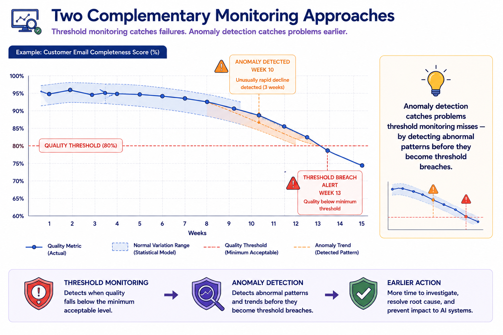
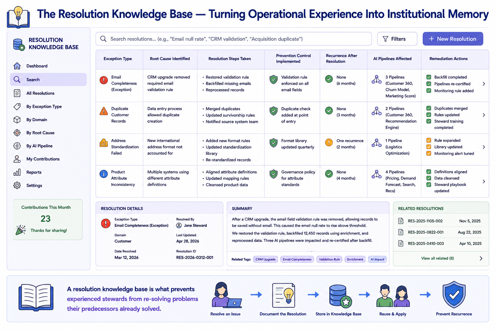
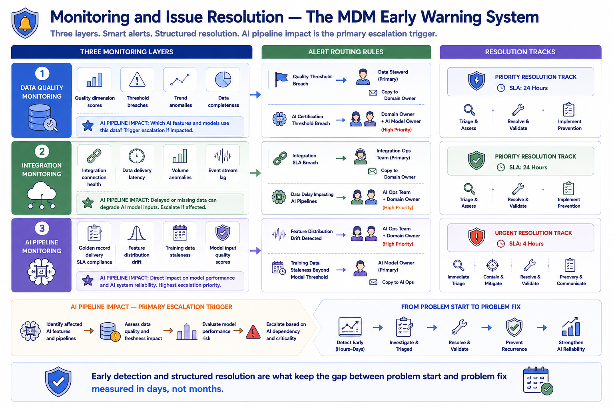

Monitoring and Issue Resolution
Module support notes
Anomaly Detection vs. Threshold Monitoring
Threshold monitoring and anomaly detection are complementary rather than alternative monitoring approaches, and mature MDM operations programs use both simultaneously. Threshold monitoring provides clear, deterministic alerts when a quality or performance metric crosses a defined boundary — simple to configure, easy to act on, and directly tied to governance standards. Anomaly detection identifies statistically unusual patterns in metric behavior that may not yet have crossed a threshold but represent a meaningful departure from normal variation.
For AI pipeline monitoring specifically, anomaly detection is particularly valuable for feature distribution drift, where gradual shifts in the statistical properties of model inputs can degrade model performance well before any individual quality metric crosses its threshold.
Note
Threshold monitoring catches failures. Anomaly detection catches the conditions that precede them. Used together, threshold monitoring ensures no breach goes undetected, while anomaly detection provides earlier warning of developing problems — often detecting unusual patterns three to four weeks before a metric reaches its threshold boundary. For AI programs, that early warning is the difference between a proactive data quality intervention and an emergency retraining cycle.

Building an Issue Resolution Knowledge Base
Every resolved exception and investigated issue contains information that makes the next similar problem faster to resolve — if that information is captured and made searchable. A resolution knowledge base accumulates documented root cause analyses, resolution steps, prevention controls implemented, and outcomes — including AI pipeline impacts and remediation actions.
Over time, the knowledge base also reveals systemic patterns that individual exception records obscure — recurring root causes that warrant a governance policy change, source systems that disproportionately generate certain exception types, or AI pipelines that are particularly sensitive to specific quality dimension changes.
Tip
Make the resolution knowledge base searchable from the exception workflow interface — not a separate system stewards have to remember to consult. When a steward receives a new exception, the workflow should automatically surface the three most similar previous cases from the knowledge base. That single design decision reduces investigation time significantly and prevents experienced stewards from re-solving problems their predecessors already solved.

Early detection and structured resolution are what keep the gap between problem start and problem fix measured in days rather than months — protecting the AI systems that depend on continuous data quality.
